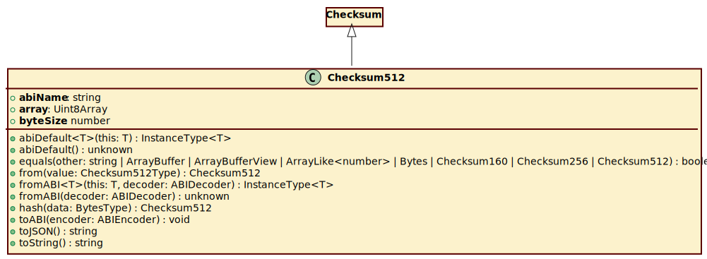

Class Checksum512
Hierarchy-Diagram
{kind=link}
Legend
 class
class
 public method
public method
underlined
static property/method
Hierarchy
- Checksum
- Checksum512
Constructors
constructor
- new
Checksum512(array): Checksum512 Parameters
- array: Uint8Array
Returns Checksum512
Properties
Readonly array
array: Uint8Array
Static abi
abi
Static byte
byte
Accessors
hex
- get hexString(): string
Returns string
Methods
equals
- equals(other): boolean
Parameters
- other: string | ArrayBuffer | ArrayBufferView | ArrayLike<number> | Bytes | Checksum160 | Checksum256 | Checksum512
Returns boolean
toABI
- toABI(encoder): void
Parameters
- encoder: ABIEncoder
Returns void
toJSON
to
Static abi
Static from
- from(value): Checksum512
Parameters
- value: Checksum512Type
Returns Checksum512
Static fromABI
- fromABI<T>(this, decoder): InstanceType<T>
Type Parameters
Parameters
- this: T
- decoder: ABIDecoder
Returns InstanceType<T>
- fromABI(decoder): unknown
Parameters
- decoder: ABIDecoder
Returns unknown
Static hash
- hash(data): Checksum512
Parameters
- data: BytesType
Returns Checksum512